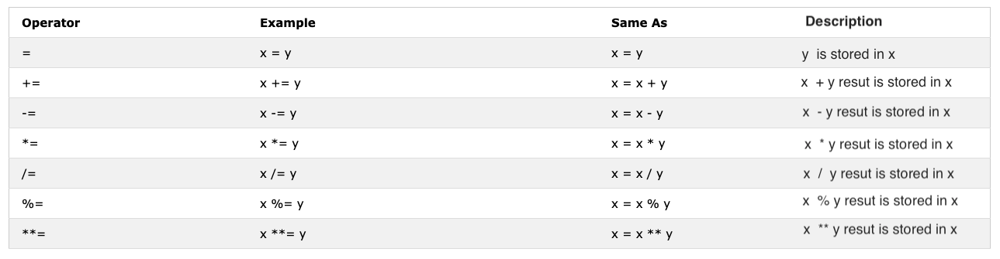
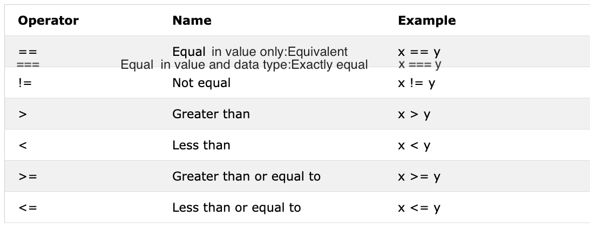
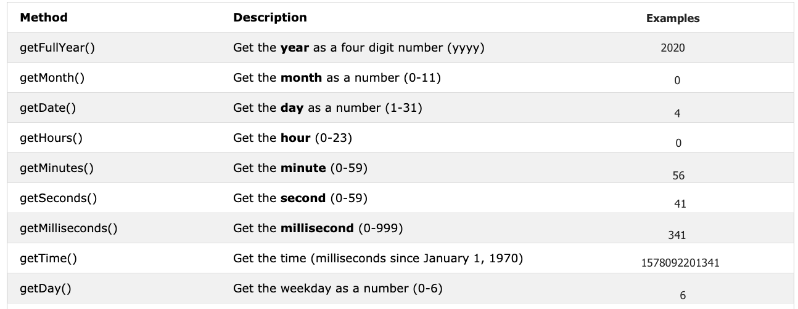

📔 Hari 3 - Oke Gas!
Booleans
Tipe data boolean merepresentasikan salah satu dari dua nilai: true atau false. Nilai boolean itu true atau false. Nanti bakal makin jelas pas kamu mulai pake operator perbandingan. Setiap perbandingan ngembaliin nilai boolean yaitu true atau false.
Contoh: Nilai Boolean
let isLightOn = true
let isRaining = false
let isHungry = false
let isMarried = true
let truValue = 4 > 3 // true
let falseValue = 4 < 3 // false
Kita sepakat ya bahwa nilai boolean itu true atau false.
Nilai Truthy
- Semua angka (positif dan negatif) adalah truthy kecuali nol
- Semua string adalah truthy kecuali string kosong ('')
- Boolean true
Nilai Falsy
- 0
- 0n
- null
- undefined
- NaN
- boolean false
- '', "", ``, string kosong
Penting nih buat ngapalin nilai truthy dan falsy tersebut. Di bagian selanjutnya, kita bakal pake mereka dengan kondisi buat ngambil keputusan.
Undefined
Kalau kita deklarasikan variabel dan nggak ngasih nilai, nilainya bakal undefined. Selain itu, kalau sebuah fungsi nggak ngembaliin nilai, hasilnya bakal undefined.
let firstName
console.log(firstName) //tidak terdefinisi, karena belum diberi nilai
Null
let empty = null
console.log(empty) // -> null , berarti tidak ada nilai
Operator
Operator Assignment
Tanda sama dengan dalam JavaScript adalah operator assignment. Dipake buat ngeset nilai ke variabel.
let firstName = 'Asabeneh'
let country = 'Finland'
Operator Assignment

Operator Aritmatika
Operator aritmatika adalah operator matematika.
- Penjumlahan(+): a + b
- Pengurangan(-): a - b
- Perkalian(*): a * b
- Pembagian(/): a / b
- Modulus(%): a % b
- Eksponensial(**): a ** b
let numOne = 4
let numTwo = 3
let sum = numOne + numTwo
let diff = numOne - numTwo
let mult = numOne * numTwo
let div = numOne / numTwo
let remainder = numOne % numTwo
let powerOf = numOne ** numTwo
console.log(sum, diff, mult, div, remainder, powerOf) // 7,1,12,1.33,1, 64
const PI = 3.14
let radius = 100 // panjang dalam meter
//Mari kita hitung luas lingkaran
const areaOfCircle = PI * radius * radius
console.log(areaOfCircle) // 314 m
const gravity = 9.81 // dalam m/s2
let mass = 72 // dalam Kilogram
// Mari kita hitung berat suatu objek
const weight = mass * gravity
console.log(weight) // 706.32 N(Newton)
const boilingPoint = 100 // suhu dalam oC, titik didih air
const bodyTemp = 37 // suhu tubuh dalam oC
// Menggabungkan string dengan angka menggunakan interpolasi string
/*
Titik didih air adalah 100 oC.
Suhu tubuh manusia adalah 37 oC.
Gravitasi bumi adalah 9.81 m/s2.
*/
console.log(
`The boiling point of water is ${boilingPoint} oC.\nHuman body temperature is ${bodyTemp} oC.\nThe gravity of earth is ${gravity} m / s2.`
)
Operator Perbandingan
Dalam pemrograman kita bandingin nilai, kita pake operator perbandingan buat ngebandingin dua nilai. Kita ngecek apakah suatu nilai lebih gede, lebih kecil, atau sama dengan nilai lainnya.

Contoh: Operator Perbandinganconsole.log(3 > 2) // true, karena 3 lebih besar dari 2
console.log(3 >= 2) // true, karena 3 lebih besar dari 2
console.log(3 < 2) // false, karena 3 lebih besar dari 2
console.log(2 < 3) // true, karena 2 lebih kecil dari 3
console.log(2 <= 3) // true, karena 2 lebih kecil dari 3
console.log(3 == 2) // false, karena 3 tidak sama dengan 2
console.log(3 != 2) // true, karena 3 tidak sama dengan 2
console.log(3 == '3') // true, hanya membandingkan nilai
console.log(3 === '3') // false, membandingkan nilai dan tipe data
console.log(3 !== '3') // true, membandingkan nilai dan tipe data
console.log(3 != 3) // false, hanya membandingkan nilai
console.log(3 !== 3) // false, membandingkan nilai dan tipe data
console.log(0 == false) // true, ekuivalen
console.log(0 === false) // false, tidak persis sama
console.log(0 == '') // true, ekuivalen
console.log(0 == ' ') // true, ekuivalen
console.log(0 === '') // false, tidak persis sama
console.log(1 == true) // true, ekuivalen
console.log(1 === true) // false, tidak persis sama
console.log(undefined == null) // true
console.log(undefined === null) // false
console.log(NaN == NaN) // false, tidak sama
console.log(NaN === NaN) // false
console.log(typeof NaN) // number
console.log('mango'.length == 'avocado'.length) // false
console.log('mango'.length != 'avocado'.length) // true
console.log('mango'.length < 'avocado'.length) // true
console.log('milk'.length == 'meat'.length) // true
console.log('milk'.length != 'meat'.length) // false
console.log('tomato'.length == 'potato'.length) // true
console.log('python'.length > 'dragon'.length) // false
Coba deh pahami perbandingan di atas dengan sedikit logika. Ngapalin doang tanpa logika mungkin susah. JavaScript bisa dibilang bahasa pemrograman yang agak aneh sih. Kode JavaScript jalan dan ngasih kamu hasil, tapi kecuali kamu udah mahir, hasilnya mungkin nggak sesuai harapan.
Sebagai aturan praktis, kalau suatu nilai nggak true dengan == maka nggak bakal sama dengan ===. Pake === lebih aman daripada pake ==. Tautan berikut punya daftar lengkap perbandingan tipe data.
Operator Logika
Simbol berikut adalah operator logika yang umum: && (ampersand), || (pipe) dan ! (negasi). Operator && ngasilin true cuma kalau kedua operand bernilai true. Operator || ngasilin true kalau salah satu operand bernilai true. Operator ! meniadakan true jadi false dan false jadi true.
// && contoh operator ampersand
const check = 4 > 3 && 10 > 5 // true && true -> true
const check = 4 > 3 && 10 < 5 // true && false -> false
const check = 4 < 3 && 10 < 5 // false && false -> false
// || pipe atau operator, contoh
const check = 4 > 3 || 10 > 5 // true || true -> true
const check = 4 > 3 || 10 < 5 // true || false -> true
const check = 4 < 3 || 10 < 5 // false || false -> false
//! Contoh negasi
let check = 4 > 3 // true
let check = !(4 > 3) // false
let isLightOn = true
let isLightOff = !isLightOn // false
let isMarried = !false // true
Operator Increment
Di JavaScript kita pake operator increment buat nambahin nilai yang tersimpan di variabel. Increment bisa berupa pre atau post increment. Yuk kita lihat masing-masing:
- Pre-increment
let count = 0
console.log(++count) // 1
console.log(count) // 1
- Post-increment
let count = 0
console.log(count++) // 0
console.log(count) // 1
Kita lebih sering pake post-increment sih. Setidaknya kamu harus inget cara pake operator post-increment ya.
Operator Decrement
Di JavaScript kita pake operator decrement buat ngurangin nilai yang tersimpan di variabel. Decrement bisa berupa pre atau post decrement. Yuk kita lihat masing-masing:
- Pre-decrement
let count = 0
console.log(--count) // -1
console.log(count) // -1
- Post-decrement
let count = 0
console.log(count--) // 0
console.log(count) // -1
Operator Ternary
Operator ternary memungkinkan kita buat nulis kondisi. Cara lain buat nulis kondisional adalah pake operator ternary. Lihat contoh berikut nih:
let isRaining = true
isRaining
? console.log('You need a rain coat.')
: console.log('No need for a rain coat.')
isRaining = false
isRaining
? console.log('You need a rain coat.')
: console.log('No need for a rain coat.')
You need a rain coat.
No need for a rain coat.
let number = 5
number > 0
? console.log(`${number} is a positive number`)
: console.log(`${number} is a negative number`)
number = -5
number > 0
? console.log(`${number} is a positive number`)
: console.log(`${number} is a negative number`)
5 is a positive number
-5 is a negative number
Prioritas Operator
Gue saranin kamu buat baca tentang prioritas operator dari tautan ini.
Metode Window
Metode Window alert()
Kayak yang udah kamu lihat di awal, metode alert() nampilin kotak peringatan dengan pesan tertentu dan tombol OK. Ini metode bawaan dan nerima satu argumen.
alert(message)
alert('Welcome to 30DaysOfJavaScript')
Jangan terlalu sering pake alert ya karena mengganggu dan bikin bete, pake aja buat ngetes doang.
Metode Window prompt()
Metode window prompt nampilin kotak prompt dengan input di browser kamu buat ngambil nilai input dan data input bisa disimpen di variabel. Metode prompt() nerima dua argumen. Argumen kedua itu opsional.
prompt('required text', 'optional text')
let number = prompt('Enter number', 'number goes here')
console.log(number)
Metode Window confirm()
Metode confirm() nampilin kotak dialog dengan pesan tertentu, barengan sama tombol OK dan Cancel. Kotak konfirmasi sering dipake buat minta izin dari pengguna buat ngejalanin sesuatu. Window confirm() nerima string sebagai argumen. Klik OK ngasilin nilai true, sedangkan klik tombol Cancel ngasilin nilai false.
const agree = confirm('Are you sure you like to delete? ')
console.log(agree) // hasilnya akan true atau false berdasarkan apa yang kamu klik pada kotak dialog
Ini bukan semua metode window ya, nanti kita bakal punya bagian terpisah buat mendalami metode window.
Date Object
Waktu itu hal yang penting. Kita pengen tahu waktu suatu aktivitas atau peristiwa tertentu. Di JavaScript, waktu dan tanggal saat ini dibuat pake JavaScript Date Object. Objek yang kita buat pake Date object nyediain banyak metode buat bekerja dengan tanggal dan waktu. Metode yang kita pake buat dapetin informasi tanggal dan waktu dari nilai date object dimulai dengan kata get karena ngasih informasi. getFullYear(), getMonth(), getDate(), getDay(), getHours(), getMinutes, getSeconds(), getMilliseconds(), getTime(), getDay()

Membuat objek waktu
Begitu kita bikin objek waktu, objek waktu bakal ngasih informasi tentang waktu. Yuk kita bikin objek waktu.
const now = new Date()
console.log(now) // Sat Jan 04 2020 00:56:41 GMT+0200 (Eastern European Standard Time)
Kita udah bikin objek waktu dan kita bisa akses informasi tanggal waktu apa pun dari objek pake metode get yang udah kita sebutin di tabel.
Mendapatkan tahun penuh
Yuk kita ekstrak atau dapetin tahun penuh dari objek waktu.
const now = new Date()
console.log(now.getFullYear()) // 2020
Mendapatkan bulan
Yuk kita ekstrak atau dapetin bulan dari objek waktu.
const now = new Date()
console.log(now.getMonth()) // 0, karena bulannya adalah Januari, bulan(0-11)
Mendapatkan tanggal
Yuk kita ekstrak atau dapetin tanggal dari objek waktu.
const now = new Date()
console.log(now.getDate()) // 4, karena tanggalnya adalah 4, tanggal(1-31)
Mendapatkan hari
Yuk kita ekstrak atau dapetin hari dalam seminggu dari objek waktu.
const now = new Date()
console.log(now.getDay()) // 6, karena harinya adalah Sabtu yang merupakan hari ke-7
// Minggu adalah 0, Senin adalah 1 dan Sabtu adalah 6
// Mendapatkan hari dalam seminggu sebagai angka (0-6)
Mendapatkan jam
Yuk kita ekstrak atau dapetin jam dari objek waktu.
const now = new Date()
console.log(now.getHours()) // 0, karena waktunya adalah 00:56:41
Mendapatkan menit
Yuk kita ekstrak atau dapetin menit dari objek waktu.
const now = new Date()
console.log(now.getMinutes()) // 56, karena waktunya adalah 00:56:41
Mendapatkan detik
Yuk kita ekstrak atau dapetin detik dari objek waktu.
const now = new Date()
console.log(now.getSeconds()) // 41, karena waktunya adalah 00:56:41
Mendapatkan waktu
Metode ini ngasih waktu dalam milidetik mulai dari 1 Januari 1970. Ini juga dikenal sebagai waktu Unix. Kita bisa dapetin unix time dengan dua cara:
- Menggunakan getTime()
const now = new Date() //
console.log(now.getTime()) // 1578092201341, ini adalah jumlah detik yang berlalu dari 1 Januari 1970 hingga 4 Januari 2020 00:56:41
- Menggunakan Date.now()
const allSeconds = Date.now() //
console.log(allSeconds) // 1578092201341, ini adalah jumlah detik yang berlalu dari 1 Januari 1970 hingga 4 Januari 2020 00:56:41
const timeInSeconds = new Date().getTime()
console.log(allSeconds == timeInSeconds) // true
Yuk kita format nilai-nilai ini ke format waktu yang bisa dibaca manusia. Contoh:
const now = new Date()
const year = now.getFullYear() // mengembalikan tahun
const month = now.getMonth() + 1 // mengembalikan bulan(0 - 11)
const date = now.getDate() // mengembalikan tanggal (1 - 31)
const hours = now.getHours() // mengembalikan angka (0 - 23)
const minutes = now.getMinutes() // mengembalikan angka (0 -59)
console.log(`${date}/${month}/${year} ${hours}:${minutes}`) // 4/1/2020 0:56
🌕 Kamu punya energi tanpa batas! Kamu baru aja nyelesein tantangan hari ke-3 dan kamu selangkah lebih maju menuju kehebatan. Gaskeun sekarang lakuin latihan buat otak dan otot kamu.
💻 Hari 3: Latihan
Latihan: Level 1
- Deklarasikan variabel firstName, lastName, country, city, age, isMarried, year dan kasih nilai padanya, terus pake operator typeof buat ngecek tipe data yang beda-beda.
- Cek apakah tipe dari '10' sama dengan 10
- Cek apakah parseInt('9.8') sama dengan 10
- Nilai boolean adalah true atau false.
- Tulis tiga pernyataan JavaScript yang ngasilin nilai truthy.
-
Tulis tiga pernyataan JavaScript yang ngasilin nilai falsy.
-
Cari tahu hasil dari ekspresi perbandingan berikut duluan tanpa pake console.log(). Setelah kamu mutusin hasilnya, konfirmasiin pake console.log()
- 4 > 3
- 4 >= 3
- 4 < 3
- 4 <= 3
- 4 == 4
- 4 === 4
- 4 != 4
- 4 !== 4
- 4 != '4'
- 4 == '4'
- 4 === '4'
-
Temukan panjang python dan jargon dan bikin pernyataan perbandingan falsy.
-
Cari tahu hasil dari ekspresi berikut duluan tanpa pake console.log(). Setelah kamu mutusin hasilnya, konfirmasiin pake console.log()
- 4 > 3 && 10 < 12
- 4 > 3 && 10 > 12
- 4 > 3 || 10 < 12
- 4 > 3 || 10 > 12
- !(4 > 3)
- !(4 < 3)
- !(false)
- !(4 > 3 && 10 < 12)
- !(4 > 3 && 10 > 12)
- !(4 === '4')
-
Tidak ada 'on' di kedua kata dragon dan python
-
Pake Date object buat ngelakuin aktivitas berikut
- Berapa tahun hari ini?
- Berapa bulan hari ini sebagai angka?
- Berapa tanggal hari ini?
- Berapa hari hari ini sebagai angka?
- Berapa jam sekarang?
- Berapa menit sekarang?
- Temuin jumlah detik yang udah berlalu dari 1 Januari 1970 hingga sekarang.
Latihan: Level 2
- Tulis script yang minta pengguna masukin alas dan tinggi segitiga dan ngitung luas segitiga (luas = 0.5 x a x t).
Masukkan alas: 20
Masukkan tinggi: 10
Luas segitiga adalah 100
- Tulis script yang minta pengguna masukin sisi a, sisi b, dan sisi c segitiga dan ngitung keliling segitiga (keliling = a + b + c)
Masukkan sisi a: 5
Masukkan sisi b: 4
Masukkan sisi c: 3
Keliling segitiga adalah 12
- Dapetin panjang dan lebar pake prompt dan hitung luas persegi panjang (luas = panjang x lebar) dan keliling persegi panjang (keliling = 2 x (panjang + lebar))
- Dapetin jari-jari pake prompt dan hitung luas lingkaran (luas = pi x r x r) dan keliling lingkaran (k = 2 x pi x r) di mana pi = 3.14.
- Hitung kemiringan (slope), perpotongan sumbu x (x-intercept) dan perpotongan sumbu y (y-intercept) dari y = 2x -2
- Kemiringan adalah m = (y2-y1)/(x2-x1). Temuin kemiringan antara titik (2, 2) dan titik (6,10)
- Bandingin kemiringan dari dua pertanyaan di atas.
- Hitung nilai y (y = x2 + 6x + 9). Coba pake nilai x yang beda-beda dan cari tahu di nilai x berapa y adalah 0.
-
Tulis script yang minta pengguna masukin jam dan tarif per jam. Hitung gaji orang tersebut?
Masukkan jam: 40 Masukkan tarif per jam: 28 Penghasilan mingguan Anda adalah 1120 -
Kalau panjang nama kamu lebih dari 7, bilang nama kamu panjang, kalau nggak bilang nama kamu pendek.
-
Bandingin panjang nama depan dan nama keluarga kamu, dan kamu harus dapetin output ini.
let firstName = 'Asabeneh' let lastName = 'Yetayeh'Nama depan Anda, Asabeneh lebih panjang dari nama keluarga Anda, Yetayeh -
Deklarasikan dua variabel myAge dan yourAge dan kasih nilai awal myAge dan yourAge.
let myAge = 250
let yourAge = 25
Saya 225 tahun lebih tua dari Anda.
-
Pake prompt dapetin tahun lahir pengguna dan kalau pengguna berusia 18 tahun ke atas, izinin pengguna buat nyetir, kalau nggak kasih tahu pengguna buat nunggu sejumlah tahun tertentu.
Masukkan tahun lahir: 1995 Anda berusia 25. Anda cukup umur untuk mengemudi Masukkan tahun lahir: 2005 Anda berusia 15. Anda akan diizinkan mengemudi setelah 3 tahun. -
Tulis script yang minta pengguna masukin jumlah tahun. Hitung jumlah detik yang bisa dijalani seseorang. Asumsikan seseorang hidup cuma seratus tahun.
Masukkan jumlah tahun Anda hidup: 100
Anda hidup 3153600000 detik.
- Bikin format waktu yang bisa dibaca manusia pake Date time object
- YYYY-MM-DD HH:mm
- DD-MM-YYYY HH:mm
- DD/MM/YYYY HH:mm
Latihan: Level 3
- Bikin format waktu yang bisa dibaca manusia pake Date time object. Jam dan menit harus selalu dua digit (7 jam harus 07 dan 5 menit harus 05)
- YYY-MM-DD HH:mm contoh. 20120-01-02 07:05